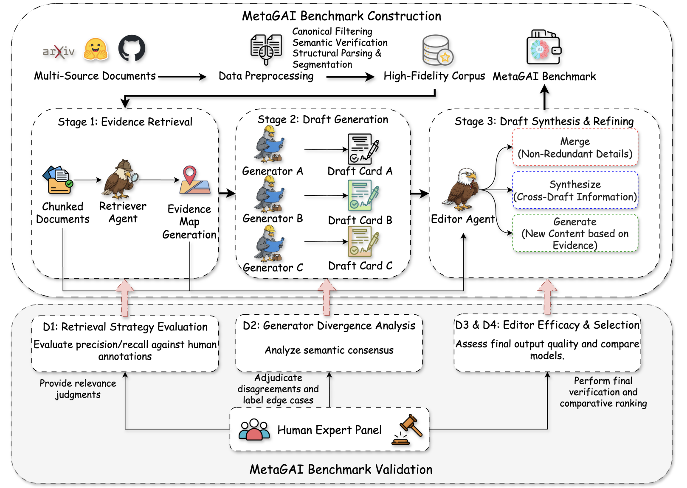
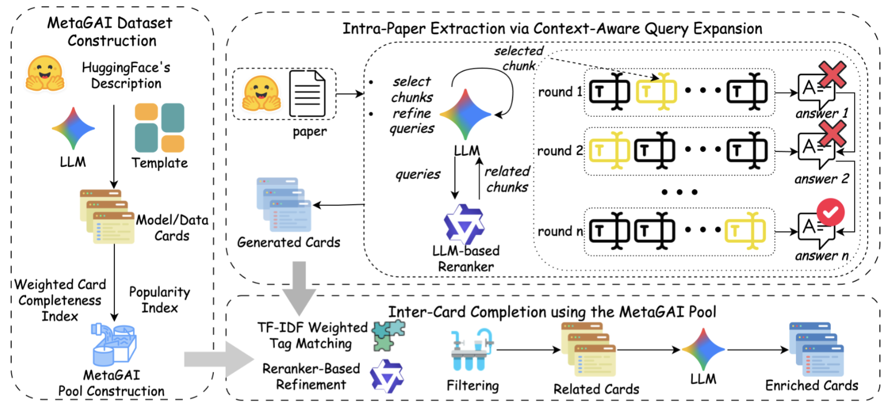
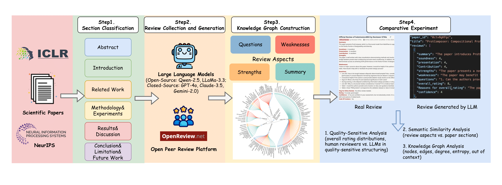
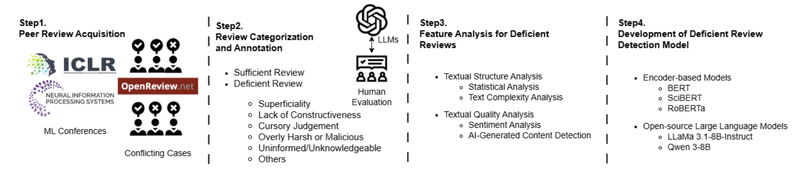
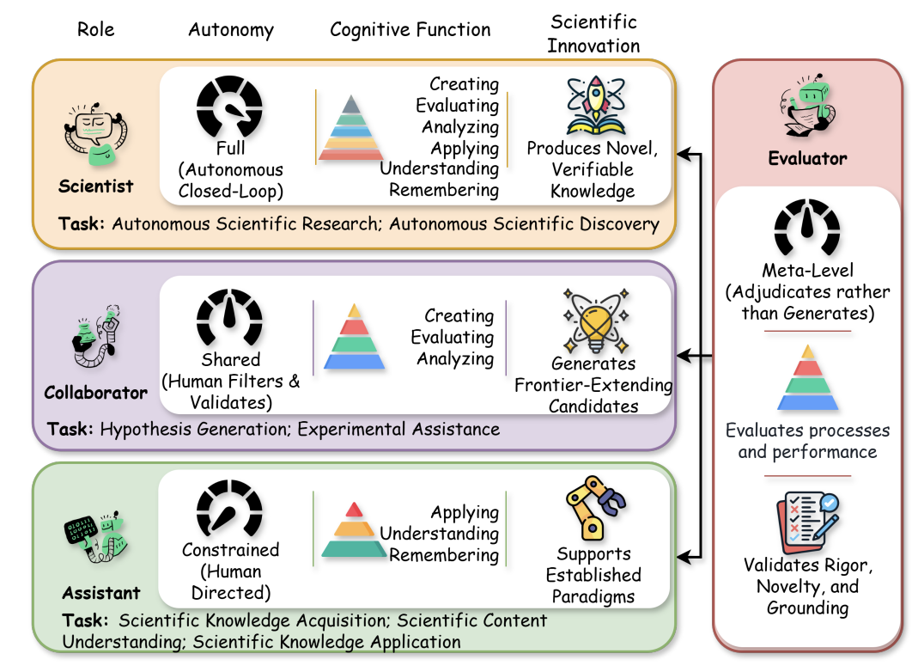
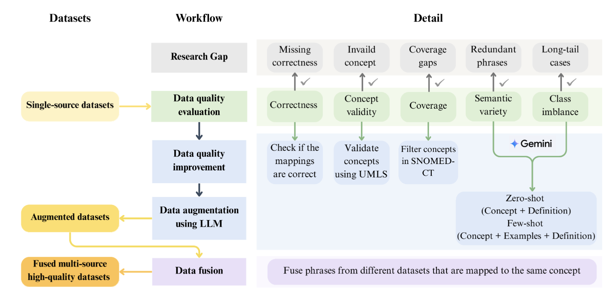
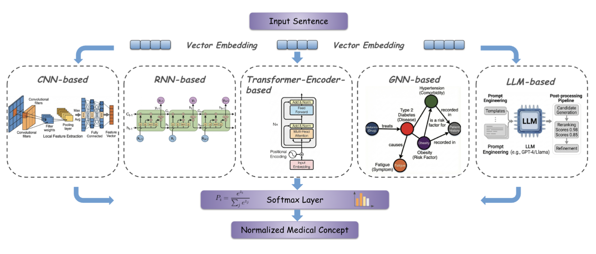

|
I am a Ph.D. student in Computer Science at North Carolina State University, advised by Dr. Edward Gehringer and co-supervised by Dr. Junhua Ding. I also work closely with Dr. Haihua Chen and Dr. Yang Zhang. My research focuses on AI for Science (AI4Science) and multimodal large language models, with particular emphasis on scientific novelty assessment, AI-assisted peer review, and layout-grounded evidence retrieval and reasoning in multimodal GraphRAG. I have published multiple papers at leading conferences, including NeurIPS, WWW, EMNLP, and ICDM. Drawing on language modeling and multimodal learning, my work aims to support scientific evaluation and discovery while advancing AI capabilities in complex, knowledge-intensive tasks. |
|
Sep. 2026 One paper accepted to NeurIPS. Aug. 2026 One paper accepted to EMNLP. May 2026 I joined Meituan as an AI Agent Engineering Intern. Jan. 2026 One paper accepted to WWW. Aug. 2025 One paper accepted to ICDM. |
For a complete list, see my Google Scholar profile.

|
Paper / Homepage / Code / Dataset A topology-aware benchmark for multimodal GraphRAG, assessing the retrieval and composition of heterogeneous, layout-grounded document evidence under controlled reasoning topologies. |
|
 |
A large-scale benchmark for generative AI documentation, combining cross-source evidence triangulation, multi-agent curation, and human-in-the-loop validation to assess the faithfulness and completeness of model and data cards. |
|
 |
An adaptive retrieval-augmented framework that integrates context-aware query expansion with cross-card knowledge transfer to generate comprehensive, structured documentation for generative AI models and datasets. |
|
 |
A systematic investigation of LLM-generated scientific peer reviews, combining semantic and graph-structural analyses to characterize their descriptive strengths, limitations in critical assessment, and sensitivity to paper quality. |
|
 |
An LLM-driven framework for identifying deficient scientific peer reviews, combining human-validated annotation and targeted synthetic augmentation to strengthen automated review quality assessment. |
|
 |
A role-based synthesis of LLMs in scientific innovation, examining how autonomy, cognitive function, and human oversight shape their capabilities as research assistants, collaborators, scientists, and evaluators. |
|
 |
A quality-aware framework for medical concept normalization, integrating controlled LLM-based augmentation with multi-source data fusion to expand concept coverage and address long-tailed clinical terminology. |
|
 |
A comprehensive review of medical concept normalization, organizing datasets, ontologies, modeling paradigms, and evaluation practices to clarify the field's methodological evolution and open challenges. |
|
A data-centric investigation of medical concept normalization, examining how LLM-based augmentation and systematic quality assessment affect dataset integrity, model performance, and the reliability of evaluation. |
|
Academic Experience
North Carolina State University
Ph.D. Candidate in Computer Science
Research Advisor: Dr. Edward Gehringer
Northeastern University
Master's Degree in Computer Science
North Carolina State University
Bachelor's Degree in Computer Science
Work Experience
Meituan
AI Agent Engineering Intern
Karyopharm Therapeutics
Data Scientist Intern
Journal Reviewer
- Computer Standards & Interfaces
- IEEE Transactions on Network Science and Engineering
- Journal of Cloud Computing
- The Electronic Library
Conference Reviewer
- ACL
- WWW
- ICDM
- JCDL
Teaching
Teaching Assistant
- CSC 216 — Software Development Fundamentals
- CSC 517 — Object-Oriented Design and Development
- CSC 422 — Automated Learning and Data Analysis
Best Poster Award
25th IEEE International Conference on Data Mining (ICDM)
Student Travel Award
25th IEEE International Conference on Data Mining (ICDM)
Best Paper Award
36th International Conference on Software Engineering Education and Training (CSEE&T)
Paper Award (Third Prize)
South Central Chapter of the Medical Library Association (SCC/MLA)